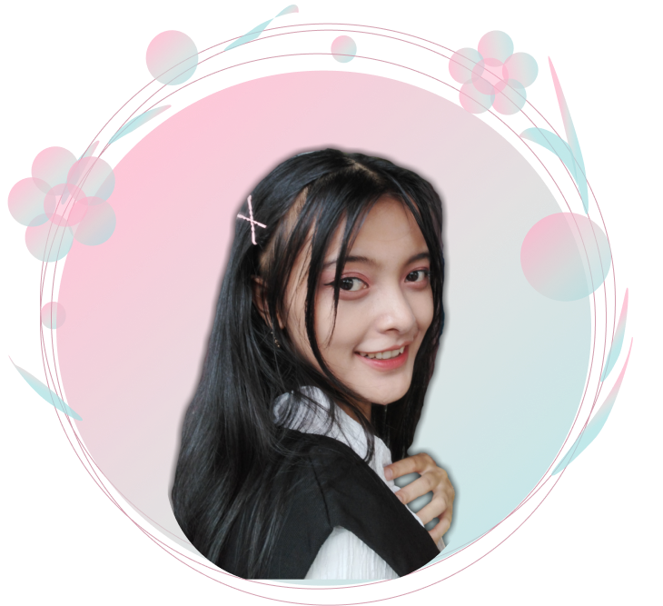
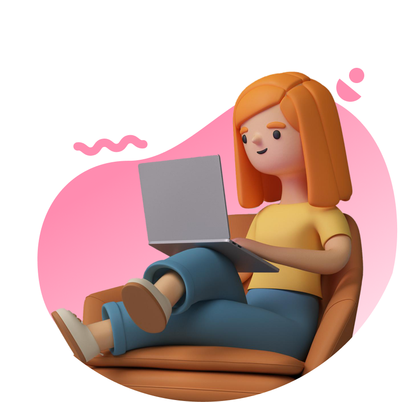

Hallo Semuaa, Saya
Vela Putri
Frontend Developer &
Make-up Consultan
Seorang frontend developer yang merajut inspirasi menjadi karya, menciptakan
website yang bukan sekadar tumpukan kode, melainkan sebuah masterpiece
digital yang memukau dan menginspirasi.

Tentang Saya
Profil Saya
Saya Vela, 20 tahun (saat cv ini dibuat), lulusan SMA Negeri 6 Malang 2021, berdomisili di Kota Malang. Kepribadian saya disiplin, kreatif, dan percaya diri, dengan kemampuan Communication dan selling yang baik. Juga memiliki keahlian sebagai Frontend Developer.
